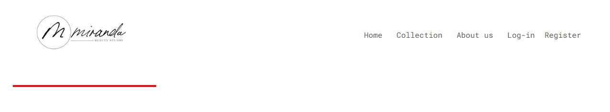
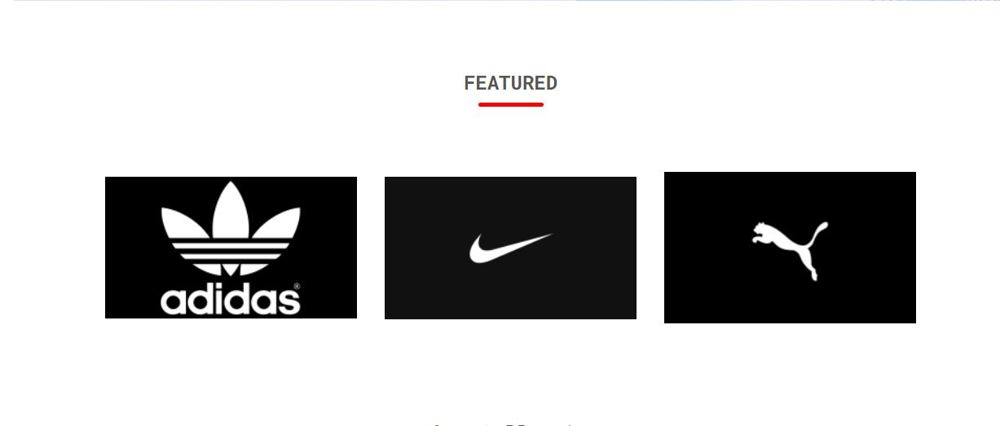

User Support .
Below are some tips to navigate the website.
1. How to view the entire collection?.
After the user enters the website,the user can click on collection button from the navigation bar to view the enire collection.

2. What are the highlights?
Our website mainly deals in high-end shoe retail, however our most popular choices are highlighted on the homepage and clicking on any of them takes to their home(For people with brand preferances).

3.
4. To add items to the website click on the add button near the top, which will guide the user to our admin_add web page.
5. Here the user can add the rpoduct by filling in the respective information for the product to be added.
6. An Admin can remove Product from the edit-collection page, click on the product, which takes the user to single_admin.php.
7. After arriving on this webpage click on the remove button, which removes the product from the website.